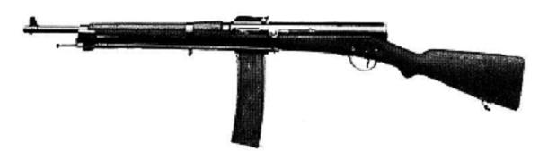

World War 1 saw the debut of submachine guns. Recognizing that the full sized rifles that most soldiers were equipped with were unwieldly in the close quarters fighting of trench warfare, nations began experimenting with high capacity pistols. These eventually developed into fully automatic weapons, and thus the submachine gun was born. Submachine guns would come to be associated the infiltration tactics in the laters years of WWI, especially those of German stormtroopers.
Submachine guns are used by the assualt class for short to mid-range combat. Use them to clear out tight spaces like trenches or buildings.
The Hellriegel 1915 has the best combination of recoil, magazine size, and damage of the submachine guns. The Automatico M1918 is also good on maps with lots of close quarters.
The MP18 is the default submachine guns, and like default weapons it fills a jack of a trades role in the submachinegun class. It has low recoil, making it easy to handle for middle ranges but a low rate of fire means it usually can't compete at close range with other submachine guns or shotgus. It also has very good hip-firing accuracy, it a very consistent and forgiving weapon. It comes in three variants:

The first practical submachine to be used in large numbers, the MP18 was the developed from German efforts to make fully automatic pistols. These efforts failed due the light weight of pistols making fully automatic fire virtually impossible due to recoil. A full sized weapon was needed, as thus the MP18 was born. The MP18 was used extensively in the final stages of the war, mostly by German stormtroopers. The MP18's portability and firepower made it perfect for their fast-paced and close quarters engagements. The MP18 would go on to influence later German submachine guns like the MP28 and MP34.
The Automatico M1918 is the submachine specialized in close quarters firefights. This is mostly due to its unparalleled firerate of 900 rounds per minute which kills enemies within a few seconds. This combined with a quick reload time makes it easy to mow through enemy squads if you can sneak up on them. However, the Automatico has a lot of recoil because of this fire rate, so using it at long range is much more difficult. The Automatico has three variants:
The M1918 was an Italian weapon made by Beretta in 1918. It was based on the Villar-Perosa, an earlier Italian aircraft gun that fired pistol rounds. It borrowed the top loading magazine design from the Villar-Perosa, using gravity and not a spring to push rounds into the gun. According to some sources it predates the MP18, making it the first true submachine gun in the world. However, much fewer of them were produced, though a few did see action in WWII.
The Hellriegel's defining feature is it's large magazine of 60 rounds. This makes it a forgiving weapon as missing a few shots is not a big deal. This capacity combined with a decent rate of fire makes it a powerful weapon up close. It also makes the Hellriegel very good with flanking since it has enough rounds to kill up to 13 players. However, it has a moderate amount of recoil limiting its long range performance. Players also have to watch out for overheating, which occurs after firing 40 rounds. The Hellriegel has 2 variants:
The Standschütze Hellriegel 1915 was a prototype water cooled submachine gun made by Austria-Hungary in 1915. No complete examples survived to the present day, and the gun only has two pictures depicting it, so not much is know about its internal mechanisms. Interestingly, these pictures show the drum magazine being seperate from the gun, not attached. Had the Austro-Hungarians pursued the design, it probably would have been the first submachine gun ever fielded.
The Ribeyrolles is the game's long range submachine gun. It has good damage, muzzle velocity, and low recoil, making it very good at taking out distant enemies. It also has a bipod that eliminates most recoil when the gun is propped on a surface. However, it is weak at close range due to it's lower rate of fire and poor hipfire accuracy. Stay at long ranges to maximize your performance with this weapon. The Ribeyrolles only has one variant, so there are no comparisons.
The Ribeyrolles 1918 was technically not a submachine gun. In fact it could qualify as one of the first assault rifles in the world, more than 30 years before the Stg44 or AK-47. It used an intermediate cartridge, the 8x35mm, fed from a 25 round magazine, and was equipped with a bipod, suggesting an intended role as a light machine gun rather than an assault rifle. However, it was eventually abandoned over logistical issues regarding the brand new cartridge and concerns that the intermediate round was too weak for the light machine gun role it was intended for. A weapon that arrived too early for its time, had it been developed further it could have revolutionized infantry combat like the Stg44 did.